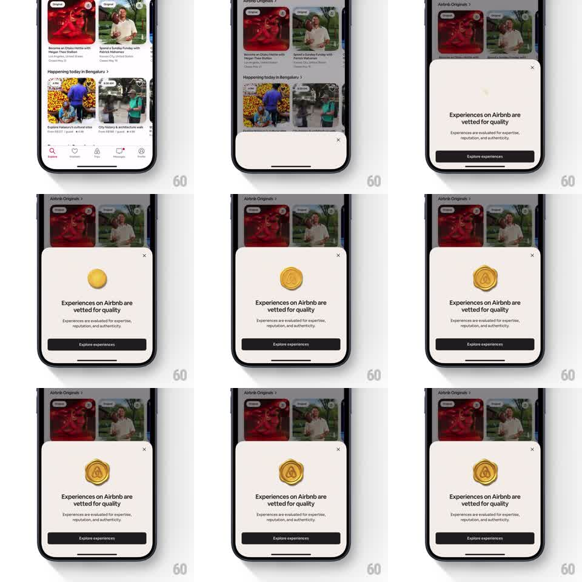

Media
Frame-by-frame

Rebuild this animation 1:1: Airbnb's quality seal moment - a bottom sheet slides up over the Explore feed, and a 3D golden sphere drops in, melts and spreads into a skeuomorphic wax seal stamped with the Airbnb logo, above "Experiences on Airbnb are vetted for quality" and a black "Explore experiences" button.

Rebuild this animation 1:1: Airbnb's quality seal moment - a bottom sheet slides up over the Explore feed, and a 3D golden sphere drops in, melts and spreads into a skeuomorphic wax seal stamped with the Airbnb logo, above "Experiences on Airbnb are vetted for quality" and a black "Explore experiences" button. ## Integration Integration: stack-agnostic spec - springs given as stiffness/damping, timed motions as duration + curve; map every value to your framework and animation library of choice. ## Scene Explore feed (Airbnb Originals, Happening today cards) dimmed under a scrim. A white bottom sheet: centered gold wax seal badge, headline "Experiences on Airbnb are vetted for quality", subcopy "Experiences are evaluated for expertise, reputation, and authenticity.", a full-width black "Explore experiences" button, and a close X top-right. ## Motion spec Pattern: 3D sphere-to-wax-seal morph. - The sheet slides up over the dimmed feed (300ms ease-out, scrim 45%). - A glossy golden sphere drops from above the sheet (fall 350ms ease-in) and lands at center with a squash (scale 1 -> 0.8Y, 80ms). - The sphere melts: it spreads outward into a wax blob (scale X 1 -> 1.4, edges becoming irregular, 300ms ease-out) with gold ripples traveling across its surface. - The seal stamps: a subtle press (scale 1.05 -> 1.0, 120ms) reveals the embossed Airbnb logo ring and inner emblem as highlights shift from sphere-gloss to matte wax. - Headline, subcopy, and button fade up staggered (200ms each, 80ms apart) after the stamp settles. - Idle: the seal has a faint metallic gleam sweep every 4s. ## Calibration - The morph is one continuous motion: drop, squash, spread, stamp - no pauses between. - The wax edge is irregular like real wax, not a perfect circle. ## Reduced motion Sheet fades in with the finished seal already in place; copy fades in after. ## Don't miss - The sphere is reflective gold before the melt and matte wax after - the material change sells the morph. - The Airbnb logo is embossed into the seal, lit by the same light as the wax.